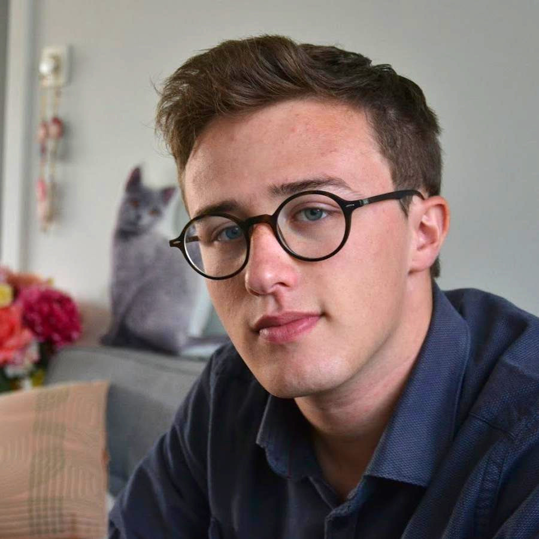
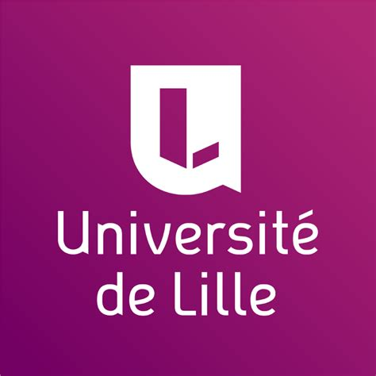
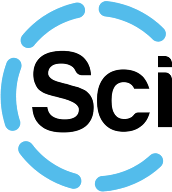
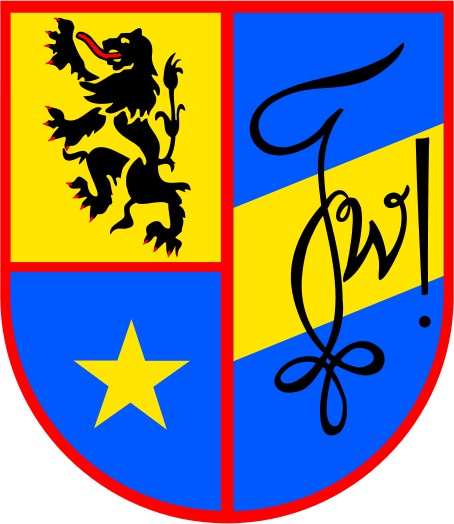
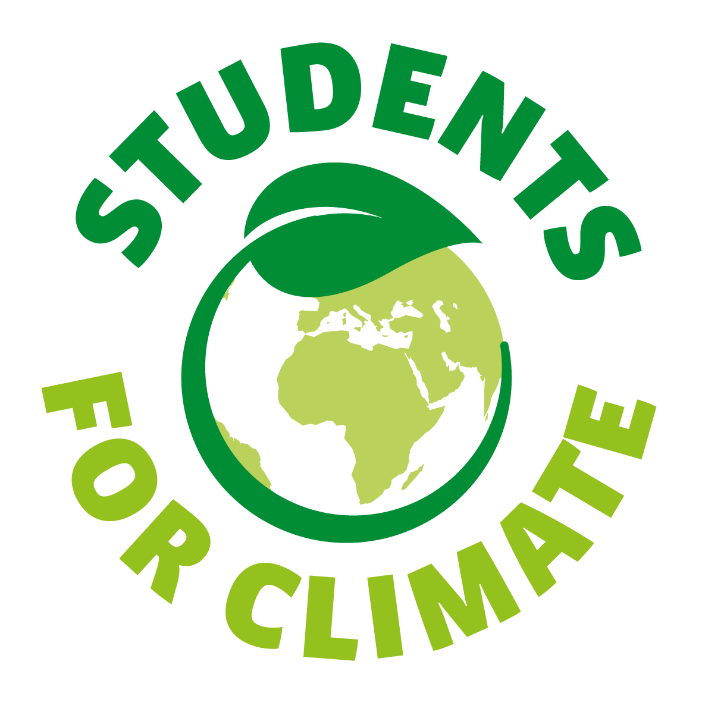

Leuven, Belgium download cv
Arne Van Den Kerchove
Ph.D. Researcher Brain-Computer Interfaces
arne[dot]vandenkerchove[at]kuleuven[dot]com arne[at]vandenkerchove[dot]com arnevdk arne-van-den-kerchove @arne:matrix.vandenkerchove.com 0000-0002-9367-2986
0000-0002-9367-2986Leuven, Belgium download cv
Experience →
Publications
Presentations

|
JJC-ICON 2021 Presentation at CORTICO Young Researchers Day about a multi-component approach to spatiotemporal beamforming decoding of event-related potentials. |
|
KU Leuven Science Day 2021 Dutch poster for the general public about covert attention BCIs and ERP classification with spatiotemporal beamforming. |
|
KU Leuven Science Day 2021 Demo Dutch online demo of event-related potenial decoding with spatiotemporal beamforming for the general public. |
Interests
← About me
Education
|
Ph.D. in Biomedical
Sciences KU Leuven, ongoing |
|
|  |
Ph.D. in Control Science and Signal Processing University of Lille, ongoing
KU Leuven & University of
Lille Global Ph.D.
Partnerships 2020 Grant
Thesis: EEG-based Visual Brain-Computer Interface for Gaze-free Communication |
|
M.Sc. in Engineering
Sciences:
Computer Science, Cum
laude KU Leuven, 2020
Option Artificial
Intelligence.
Thesis: Transcription
of multiple ERP
components from
EEG recordings using
spatio-temporal
beamforming
|
|
B.Sc. in Informatics KU Leuven, 2017
Minor in natural sciences.
Thesis: Drone
simulator and stereoscopic
object detection
autopilot
|
Professional experience
|
Teaching Assistant Fundamentals
of
Computer Science KU Leuven, 2020
Teaching programming and
algorithmic
reasoning to first year
engineering
students.
|
|
Python Developer Mindspeller, 2019
Python flask developer in a
spin-off
of the KU Leuven Computational
Neuroscience lab
that provides marketing services
based on neuroscientifically
validated association
studies.
|
 |
Database Technician Pharmacists Forum of Brabant, 2015
Database refactoring and
migration.
|
|
Freelance Full-stack Web
Developer Self employed, 2014-2020
I build and design websites for
small start-ups and
organisations
with Drupal CMS or
Django,
combined with hosting on own
server
infrastructure.
|
|
Front-end Web Developer GBITs Web Development, 2014
HTML/CSS template editing for a small web development company.
|
Volunteering Experience
 |
Red
Cross, Event Paramedic
Helping people in need.
|
|
Red Cross Youth,
Local Deputy President and First Aid
Instructor
Youth leader in an openly
accessible
youth movement and first aid
instructor
for children of age 6 to 16.
|
|
KU Leuven,
PAL Tutor Principles of Computer
Programming
Organizing and teaching Peer
Assisted
Learning sessions in Python
programming
to first year Informatics
students.
|
|  |
Scientica Leuven vzw, Board
Secretary
Day-to-day management of an
overarching
student organization at the
Faculty of
Science of KU Leuven.
Responsible for
internal quality
assurance and documentation.
|
|  |
Wina Leuven vzw, Board Member
Day-to-day management of the
student
organisation for Physics,
Mathematics
and Informatics at KU Leuven.
Organizing
events and parties.
|
|
Scientica Leuven vzw & Wina
Leuven
vzw, Webmaster
Team leader of
the technical support teams and
of
multiple student organizations
and
sysadmin of a small scale
distributed
Linux server infrastructure.
Developing and maintaining the
websites and online
course service platform.
|
|  |
Students for Climate Leuven
Organizing and mobilizing for a
greener future.
|